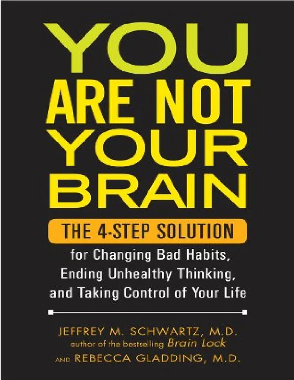

Giải Pháp 4 Bước Để Thay Đổi Thói Quen Xấu, Chấm Dứt Tư Duy Tiêu Cực Và Làm Chủ Cuộc Đời — Jeffrey M. Schwartz, M.D. & Rebecca Gladding, M.D. (Avery / Penguin Group, New York, 2011).
Tác giả: Jeffrey M. Schwartz, M.D. & Rebecca Gladding, M.D.. Nhà xuất bản: Avery / Penguin Group, New York, 2011.
Bản dịch toàn văn tiếng Việt cho thư viện TaichiKB / TaichiNOW, phục vụ mục đích học tập cá nhân.